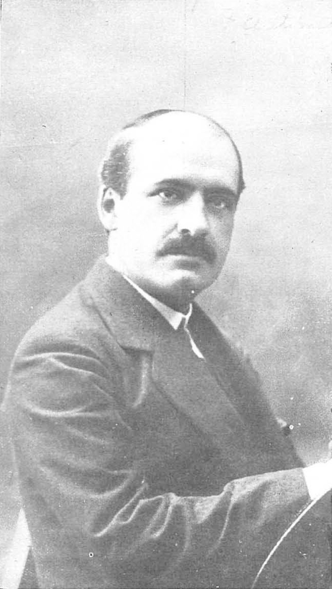

Tema 18 · El pensamiento español: Unamuno, Ortega, Zambrano
Para entrar en el pensamiento español
Mientras Heidegger preguntaba por el ser y Sartre proclamaba que estamos condenados a ser libres (§63-§64), en España, por un camino propio y a su aire, tres pensadores hacían de la vida el centro de la filosofía. No es que copiaran al existencialismo: en parte lo anticipan —Unamuno escribe su obra mayor catorce años antes que Heidegger— y en parte dialogan con él de tú a tú. Lo que comparten es una misma desconfianza de la razón fría y abstracta, la que cree poder entenderlo todo desde fuera, sin contar con quien vive, sufre y muere.
Por eso a los tres les vale el mismo gesto: ponerle a la razón un apellido que la ate a la vida. Lo seguiremos en orden cronológico, que es también el de un magisterio. Primero, Miguel de Unamuno, el hombre del sentimiento trágico, que vive la razón como un combate contra el corazón (§65). Después, su rival más joven, José Ortega y Gasset, que busca una razón vital, capaz de pensar la vida sin renunciar a la claridad del concepto (§66). Y, por último, la discípula más original de Ortega, María Zambrano, que da un paso más y reclama una razón poética, reconciliada con lo que el concepto deja fuera (§67).
Son tres voces, no una escuela, y a menudo discuten entre sí. Pero juntas dibujan una manera peninsular de filosofar: desde la vida concreta, con la lengua viva y sin miedo a que el pensamiento roce la literatura.
§65 · Miguel de Unamuno
El hombre de carne y hueso. Miguel de Unamuno (1864-1936), bilbaíno, catedrático y rector de la Universidad de Salamanca y figura mayor de la Generación del 981, abre su filosofía con una protesta. La filosofía de los sistemas —se queja— habla de «el hombre» en abstracto, de un sujeto sin rostro que ni nace ni muere. A ese fantasma opone Unamuno el hombre de carne y hueso, «el que nace, sufre y muere —sobre todo muere—, el que come y bebe y juega y duerme y piensa y quiere». La filosofía no brota de la pura curiosidad, sino de ese hombre concreto y de su angustia ante la muerte. En esto Unamuno prolonga a Kierkegaard (§62) y se adelanta al existencialismo: el punto de partida no es el saber, sino el existir.

El sentimiento trágico de la vida. Su obra central, Del sentimiento trágico de la vida en los hombres y en los pueblos (1913), nombra ya en el título su tema. Lo trágico nace de un choque sin solución. Por un lado, el ser humano tiene hambre de inmortalidad: no un deseo abstracto, sino el ansia desnuda de este yo concreto que se rebela contra su propia desaparición. «No quiero morirme, no; no quiero, ni quiero quererlo; quiero vivir siempre, siempre, siempre», escribe; y no le bastan los consuelos que la filosofía suele ofrecer —perdurar en los hijos, en la obra, en la memoria de otros, o disolverse apaciblemente en el todo—, porque ninguno salva a este yo que soy. Por otro lado, la razón no le concede nada: examinada en frío, la inmortalidad del alma no se demuestra, y cuanto más rigurosa es la razón, más parece empujar hacia la nada. La razón tiende a disolver justo lo que la vida ansía conservar. De ahí lo trágico: no es un problema que se resuelva, sino una herida que se habita, sin anestesia, entre lo que el corazón pide y lo que la cabeza puede sostener. Hasta sus novelas escenifican esa hambre: en Niebla (1914), el personaje Augusto Pérez, al descubrir que no es más que un ente de ficción a punto de ser «matado» por su autor, se rebela y le planta cara para reclamar el derecho a seguir viviendo —un espejo de cualquiera de nosotros frente a su propia muerte—.
Razón y fe, en agonía. Unamuno no resuelve el conflicto; se niega a hacerlo, porque cree que resolverlo sería falsearlo. Ni la razón vence al anhelo de eternidad ni el anhelo acalla a la razón: los dos quedan vivos, tirando cada uno por su lado, y de esa tensión sin tregua brota lo que llama la congoja. La fe no es para él una certeza tranquila y heredada, sino querer creer contra la razón, un acto de la voluntad que se sabe sin pruebas y que por eso ha de renovarse cada día. A esa lucha la llama agonía, en su sentido griego: no la antesala de la muerte, sino combate2. Lo llevó al extremo en su novela San Manuel Bueno, mártir (1930): su protagonista es un cura de pueblo que ha perdido la fe en la otra vida, pero sostiene la de sus feligreses y calla su propia duda por amor a ellos, para no robarles el consuelo. Es el sentimiento trágico hecho carne, y un personaje, no un argumento: Unamuno piensa en novelas y en paradojas porque cree que solo así se puede pensar de veras la vida. Su héroe último es Don Quijote, a quien convierte en santo laico de esa fe que, contra toda razón, crea aquello en que cree; a esa actitud vital la llamó quijotismo.
La intrahistoria. Hay en Unamuno un segundo hallazgo, más sereno, que conviene retener. Bajo la historia ruidosa —la de las guerras, los reyes y las fechas— late lo que él llama la intrahistoria: la vida callada y diaria de las gentes anónimas que labran, crían y rezan, y que sostiene de verdad a un pueblo. Es «el fondo del mar», silencioso y permanente, bajo las olas de la superficie, que se agitan y pasan. La verdadera continuidad de una comunidad no está en sus grandes acontecimientos, sino en esa trama humilde que casi nunca se cuenta; y por eso, sugiere Unamuno, hay más verdad de un pueblo en sus costumbres y su lengua diaria que en sus fechas de batalla.
Unamuno pensó a gritos, en paradojas y contradicciones, porque creía que la vida misma es contradictoria y que el sistema que la ordena la traiciona. Fiel a ese carácter hasta el final, murió recluido en su casa de Salamanca en diciembre de 1936, pocas semanas después de plantar cara en público a los militares sublevados —«venceréis, pero no convenceréis»—. Su rival más joven hará justo la apuesta contraria: pensar también la vida, sí, pero con la claridad del concepto. A él pasamos.
§66 · Ortega y Gasset: la razón vital
Yo soy yo y mi circunstancia. José Ortega y Gasset (1883-1955), madrileño, es el filósofo español más influyente del siglo XX: maestro de varias generaciones, prosista deslumbrante y fundador de la Revista de Occidente, por la que entró en España buena parte del pensamiento europeo. Movido por el afán regeneracionista de su tiempo —sacar a España de su atraso abriéndola a Europa—, hizo de la filosofía una tarea pública, y su pensamiento maduró en tres tiempos: del objetivismo juvenil (que aún veía en lo subjetivo el error) al perspectivismo y, por fin, al raciovitalismo. Su filosofía cabe entera en una fórmula que enuncia muy joven, en las Meditaciones del Quijote (1914): «Yo soy yo y mi circunstancia, y si no la salvo a ella no me salvo yo». El yo no es una sustancia aislada que luego se asoma al mundo, como el cogito de Descartes (§36); tampoco el mundo lo es todo. La realidad primera es la unión de ambos: yo, siempre, junto a mi circunstancia, que tiene dos niveles —el histórico-cultural (mi época, mi tradición) y el particular (mi cuerpo, mi familia, las cosas y las gentes entre las que me toca vivir cada día)—. De ahí una consecuencia que Ortega convertirá en método: ningún dato de la realidad, por menudo que sea, queda fuera de la filosofía. «Salvar la circunstancia» es hacerse cargo de ella y darle sentido; y solo salvándola me salvo yo.

El perspectivismo. De ahí se sigue su perspectivismo. Cada vida es un punto de vista único e insustituible sobre el mundo: «donde está mi pupila no hay ninguna otra». Ortega lo explica con un ejemplo que conviene recordar: la Sierra de Guadarrama no es la misma vista desde Madrid que desde Segovia. ¿Cuál de las dos es la visión verdadera? La pregunta no tiene sentido: ambas lo son, igualmente verdaderas, y se complementan —se conoce mejor la sierra mirándola desde Madrid y desde Segovia que desde un solo lado—. Recoge así el perspectivismo de Nietzsche (§60), que hacía de toda verdad una interpretación, pero lo vuelve afirmativo: la perspectiva no deforma la realidad, es el único modo de acceder a ella, y la verdad es la composición progresiva de los puntos de vista. Lo único falso es pretender una verdad «desde ningún lugar»:
La realidad, como un paisaje, tiene infinitas perspectivas, todas ellas igualmente verídicas y auténticas. La sola perspectiva falsa es esa que pretende ser la única.
De ahí extrae Ortega dos consecuencias. Una, sobre el conocimiento: si mi mirada es parcial y las de los demás aportan lo que a la mía le falta, los otros dejan de ser un estorbo para la objetividad y pasan a ser necesarios para ella —el individualismo, lejos de encerrarnos, es condición de un conocimiento más rico—. Otra, cívica: si ninguna perspectiva agota la verdad y todas hacen falta para componerla, la tolerancia deja de ser una concesión y se vuelve condición del conocer y del convivir.
La razón vital. Su idea más propia responde a una disyuntiva que considera falsa. El racionalismo (§34) confió en una razón pura y abstracta que da la espalda a la vida; el irracionalismo, harto de ella, renunció a la razón. En su artículo Ni vitalismo ni racionalismo (1924), Ortega busca una tercera vía: una razón vital, puesta al servicio de la vida y arraigada en ella. Con ello se aparta por igual de dos excesos: del racionalismo, que sueña una razón sin límites, capaz de conocerlo y regirlo todo; y del vitalismo de un Bergson, que, fiándolo todo a la intuición y al impulso vital, deja la razón en segundo plano. Para Ortega la razón se da dentro de la vida, rodeada y limitada por ella: no es la legisladora de lo real, sino su cronista. Porque la vida es la realidad radical: no la materia ni el espíritu, sino el ámbito en que toda otra cosa aparece. Por eso invierte la vieja jerarquía que unía la filosofía al ocio: «no vivimos para pensar, sino que pensamos para vivir». Y vivir no es algo hecho, sino quehacer: encontrarse arrojado a una circunstancia y tener que decidir a cada paso qué hacer con ella —proyecto, libertad y, al tiempo, límite—. La vida nos es dada, pero no nos es dada hecha: tenemos que hacérnosla.
La razón histórica. Si la vida es quehacer y no naturaleza fija, entonces el ser humano no se entiende como una cosa, sino como una historia. «El hombre no tiene naturaleza, sino que tiene… historia» (Historia como sistema, 1935): somos lo que hemos sido, y cada presente se sostiene sobre un suelo —el pasado— y se lanza hacia un proyecto —el futuro—. Por eso la razón que sirve a la vida ha de ser histórica, y aun narrativa: para comprender algo humano —qué es el «amor», qué es una nación— no se busca su esencia intemporal, se cuenta su historia. Frente a la razón pura de un Kant, una razón narrativa. Y como ese pasado cambia de una hornada a otra, el motor de la historia son las generaciones: cada una llega al mundo con creencias algo distintas de las de sus mayores, y en ese relevo —siempre un punto conflictivo— avanza el tiempo histórico. A este mismo análisis pertenece su distinción entre las ideas que tenemos —y discutimos— y las creencias en que estamos sin advertirlo: «las ideas se tienen; en las creencias se está». Las creencias son el suelo no pensado que pisamos; cuando una se tambalea, se abre una duda y sobreviene la crisis, y hay que volver a pensar lo que se daba por descontado3.
El hombre-masa. Ese mismo análisis lo llevó Ortega a la sociedad, en su obra más leída, La rebelión de las masas (1930). Su tesis no es económica, sino moral: ha irrumpido en la vida pública el hombre-masa, que no se define por la clase ni por el dinero, sino por una actitud —el «hombre medio» satisfecho de sí, que se cree con todos los derechos y ninguna obligación, y que exige a los demás lo que no se exige a sí mismo—. Frente a él, la minoría o élite no es una casta privilegiada, sino quien se impone disciplina y exigencias; la diferencia entre ambos no es de cantidad, sino de calidad. Ortega lo retrata en tres figuras reconocibles aún hoy: el señorito satisfecho, que da por hecho que todo le es debido; el bárbaro especialista, que por dominar un rincón de una ciencia se cree autorizado a opinar de todo; y el niño mimado, que eleva su capricho a ley. Y, a diferencia de Marx (§58), Ortega niega que la historia esté garantizada: la cultura es solo un barniz que puede saltar, y debajo aguarda intacta la barbarie.
Lo que nos importa retener es ese raciovitalismo: la razón reconciliada con la vida y con el tiempo. Y precisamente sobre él trabajará su discípula más honda, María Zambrano, que aceptará la razón vital para enseguida encontrarla aún demasiado atada al concepto.
§67 · María Zambrano: la razón poética
De la razón vital a la razón poética. María Zambrano (1904-1991), malagueña, se formó en Madrid con Ortega y con Xavier Zubiri, y de la razón vital de su maestro (§66) parte; pero pronto le hace una objeción decisiva. La razón vital arraiga la razón en la vida, de acuerdo, pero sigue siendo una razón discursiva, que avanza con conceptos, definiciones y argumentos. Y el concepto, para apresar su objeto, lo violenta: lo separa, lo fija, lo despoja de cuanto en él era singular, vivo y oscuro. Queda fuera, así, toda una región de lo real —el alma, el sufrimiento, lo sagrado, lo que se siente sin poder decirse del todo— que la filosofía, desde Platón, había dejado del lado de la poesía. Ya en Filosofía y poesía (1939) Zambrano planteó esa vieja rivalidad: la filosofía busca con prisa lo uno y universal; la poesía se queda, fiel y sin prisa, con lo múltiple y lo concreto que se le da. Su empeño será reconciliarlas en una forma de conocer que llama razón poética: el rigor del pensar, sin la violencia del concepto.
Qué es la razón poética. No es renunciar a la razón en favor del puro sentimiento, ni hacer poesía en lugar de filosofía. Es una razón que se casa con la poesía: que une el pensar y el sentir en un mismo acto de conocimiento. Frente a la razón violenta que se apodera de las cosas, las define y las posee, la razón poética es receptiva: aguarda, escucha, deja que las cosas se revelen por sí mismas. Zambrano la piensa con una imagen hermosa, la de los claros del bosque: esos huecos de luz entre los árboles a los que no se llega buscándolos a la fuerza, sino deteniéndose, en una espera atenta, para que la verdad se muestre. Por eso su escritura misma cambia de forma: no demuestra, alumbra; su palabra no quiere atrapar la cosa, sino dejar que aparezca, como la claridad del amanecer —de ahí su gusto por las auroras—. Conocer, para ella, se parece menos a cazar que a recibir.
El saber del alma y lo divino. En esa apertura recupera Zambrano dos cosas que la razón moderna había expulsado. Una es el alma misma: frente a una razón que solo mira hacia afuera, hacia el mundo y sus objetos, ella reclama un saber del interior —de los sueños, del tiempo vivido, de la vida que se confiesa—. La otra es lo sagrado y lo divino: en El hombre y lo divino (1955) rastrea cómo de la experiencia originaria de lo sagrado —eso que nos sobrecoge antes de tener nombre— fueron naciendo los dioses y, con el tiempo, la propia filosofía; no lo trata como dogma, sino como una dimensión de la experiencia humana que el pensamiento no debería ignorar. Y a todo ello lo gobierna la piedad, que ella define con finura como «el saber tratar adecuadamente con lo otro»: con lo distinto, lo oscuro, lo que no es como yo. La razón poética es, así, una razón piadosa, hospitalaria con lo que la razón discursiva suele despreciar por confuso.
El exilio como condición. Su pensamiento no se entiende sin su biografía. Republicana e hija de la España que perdió la guerra, Zambrano salió del país en 1939 y vivió un exilio larguísimo —Francia, México, La Habana, Puerto Rico, Roma, hasta una aldea del Jura suizo— de más de cuarenta años; no regresó hasta 1984. Y no lo padeció solo como una desgracia: lo pensó. Hizo del exilio una categoría filosófica, una manera de conocer desde el despojamiento y desde el margen, donde quien lo ha perdido todo ve lo que el instalado no alcanza a ver. En ese destierro escribió lo mejor de su obra —El hombre y lo divino, Claros del bosque (1977)— y desde él, ya muy mayor, llegó el reconocimiento: el Premio Príncipe de Asturias en 1981, el regreso a España en 1984 y, en 1988, el Premio Cervantes, el más alto de las letras en lengua española, que ninguna mujer había recibido antes. Murió en Madrid en 1991. La que había pensado una razón que acoge lo excluido fue, ella misma, mucho tiempo una voz excluida.
Con estas tres voces —el combate de Unamuno, la claridad de Ortega, la escucha de Zambrano— se cierra una manera de pensar la razón desde la vida y desde el sentimiento. Pero el siglo XX libró además otra gran batalla en torno a la razón: la que pregunta, tras la catástrofe de los totalitarismos, qué puede esperarse de ella en la sociedad, en la ciencia y en la política. A ese frente —de la Escuela de Fráncfort a Rawls— se dedica el tema siguiente (§68).
Al Unamuno escritor le debemos, de paso, un guiño que reaparece en el feminismo de hoy: en 1921 fue el primero en usar en castellano la palabra sororidad —«Antígona era soror, hermana… convendría acaso hablar de sororidad, de hermandad femenina»—, casi un siglo antes de que la RAE la admitiera (2018) y de que la idea se asociara a Beauvoir (§77).↩︎
De ahí el título de otra de sus obras, La agonía del cristianismo (1925): no la muerte del cristianismo, sino el cristianismo entendido como lucha interior incesante. Para Unamuno, una fe que no agoniza —que no pelea con la duda— está muerta.↩︎
La distinción es de Ideas y creencias (1940); la crisis histórica sobreviene cuando es una creencia colectiva la que falla, y la cultura es el repertorio de ideas con que un tiempo intenta orientarse en ese hueco.↩︎